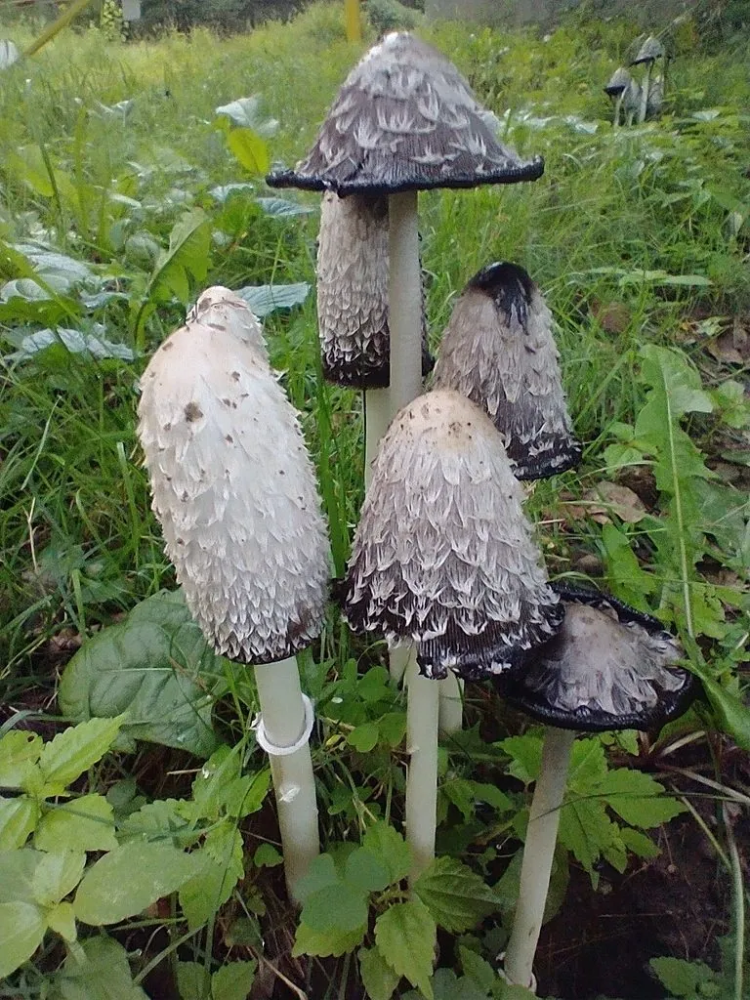

真菌 · 真菌界
毛头鬼伞 Coprinus comatus

毛头鬼伞的菌盖呈白色圆柱形、覆有反卷鳞片，成熟后自溶成黑色墨汁，幼嫩时肉质鲜嫩可食，须及时采摘烹饪。
- 分类
- 门担子菌门纲伞菌纲目伞菌目科蘑菇科属鬼伞属
- 栖息环境
- 草地、路旁、堆肥与施肥后的土壤，夏秋季出菇
- 地理分布
- 温带地区广泛分布，中国各地草地与路旁常见
- 保护级别
- 暂无评估（IUCN 未评估，中国未列入重点保护名录）
物种志
毛头鬼伞是担子菌门蘑菇科的真菌，子实体单生或群生。菌盖幼时呈细长的圆柱形或炮弹形，高 5–15 cm，直径 3–6 cm，表面白色，覆盖着白色至淡褐色的反卷鳞片，像蓬松的毛发，因此得名“毛头”；菌肉白色、薄而柔软。菌褶白色，后变为粉红色、黑色。菌柄白色，圆柱形，长 8–20 cm，中空，有白色、可移动的菌环。孢子印黑色。
毛头鬼伞生于草地、路旁、堆肥和施过肥的土壤上，夏秋季出菇，在温带地区广泛分布，中国各地常见。它最奇特的特点是成熟后菌盖会自溶，从边缘开始变成黑色的墨汁状液体，借此把孢子散播出去，这个过程只需一两天。毛头鬼伞幼嫩、菌褶尚未变黑时可以食用，肉质鲜嫩，有“鸡腿菇”之称，但采摘后自溶极快，必须立即烹饪；与含鬼伞素的墨汁鬼伞不同，它一般不与酒精发生反应，但仍应熟食。
形态与习性
- 菌盖圆柱形，高 5–15 cm，覆反卷鳞片
- 菌褶白色，后变粉红至黑色
- 菌柄白色中空，有可移动菌环
- 自溶成熟后菌盖变成黑色墨汁
- 孢子印黑色
- 食用性幼嫩时可食，采后须立即烹饪
- 别名鸡腿菇
趣味知识
- 毛头鬼伞成熟后菌盖会自己“化”成黑墨水，用于传播孢子。
- 它只在菌褶还没变黑时才能吃，采下后几小时就开始自溶。
- 毛头鬼伞的菌盖覆着反卷的鳞片，像一头蓬松的白发。
- 它常长在草地和施过肥的土上，雨后成片出现。